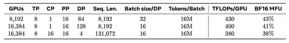
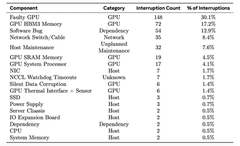

Продолжаем серию постов о модели Meta* рассказом об инфраструктуре. На чём же училась LLaMA?
Претрейн 405B-модели осуществлялся на 16 тысячах H100, с потреблением электроэнергии в 700 Вт каждая. Использовалась кастомная платформа с Liquid Cooling-хостами.
У Meta есть general-purpose-хранилище на основе TectonicFS. Изначально его использовали и для обучения ИИ, и для других процессов и клиентов. Однако создание чекпоинтов оказывало очень большую нагрузку на хранилище. Поэтому инженеры создали отдельное хранилище исключительно для тренировок модели.
Что касается сети, то в Meta сделали сразу два кластера: с RoCE для большой модели и с Infiniband для моделей поменьше. В каждой стойке по два хоста, а каждом хосте — по восемь GPU. Всего в кластере 24 тысячи GPU, из которых 16 отведены под обучение.
Внутри каждого из восьми модулей на 3072 GPU максимальная пропускная способность сети. А между модулями — она в семь раз меньше. Планировщик распределяет задачи по хостам, тем самым минимизируя сетевые коммуникации между модулями. Также используется NCCLX — кастомная версия библиотеки для коммуникаций NCCL.
Как показатель эффективности использовали Model FLOPS Utilization (MFU) — это коэффициент отношения наблюдаемого числа обработанных токенов к теоретическому максимальному числу. Он достигает от 38% до 43% — в зависимости от сетапа. Подробнее — в таблице выше.
О надежности. За 54 дня претрейна случилось 419 непредвиденных остановок — то есть примерно по 8 в день. Из строя ежедневно выходило 0,3-0,4% оборудования. Статистику по падениям можно посмотреть во второй таблице. Боролись с неполадками и предотвращали их с помощью частых чекпоинтов, быстрых рестартов, инструментов для диагностики проблем. Кроме того, инженеры — не прерывая обучение — могли менять настройки и уровень логирования.
Напоминаем, что у нас есть и другие посты о LLaMA 3.1:
— о претрейн-датасете;
— архитектуре модели;
— алайменте.
А в канале CV Time вы найдёте пост о том, как LLaMA 3.1 работает с изображениями, а также много других интересных разборов и репортажи с профильных конференций. Подписывайтесь!
Душный NLP
—
Meta признана экстремистской организацией, а Facebook и Instagram запрещены на территории РФ
